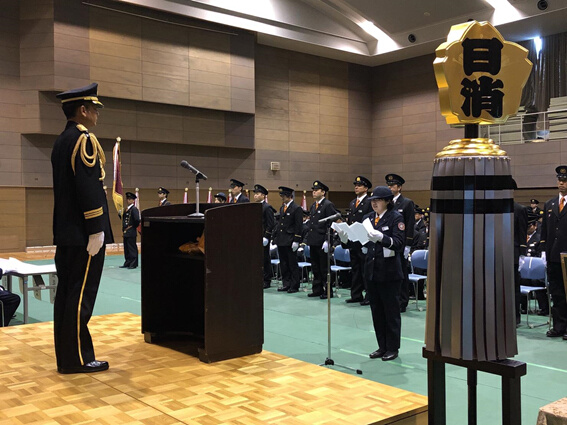

令和元年度TOPICS
□2020年3月18日 は組「活動内容」を追加しました。
□2020年3月12日 第1分団「活動内容」を追加しました。
□2020年3月10日 第7分団「活動内容」を追加しました。
□2020年3月10日 第8分団「火防巡視」を追加しました。
□2020年3月3日 第5分団「体力強化訓練」を追加しました。
□2020年3月3日 第8分団「体力強化訓練」を追加しました。
□2020年2月27日 第2分団「台風被害清掃」を追加しました。
□2020年2月25日 第10分団「体力強化訓練」を追加しました。
□2020年2月25日 第11分団「出初式」を追加しました。
□2020年2月14日 第7分団「活動内容」を追加しました。
□2020年2月13日 第8分団「研修旅行」を追加しました。
□2020年1月29日 第3分団「出初式」を追加しました。
□2020年1月28日 第5分団「活動内容」を追加しました。
□2020年1月17日 第10分団「出初式」を追加しました。
□2020年1月17日 は組「出初式」を追加しました。
□2020年1月7日 は組「歳末警戒巡視」を追加しました。
□2020年1月7日 第2分団「歳末特別警戒」を追加しました。
□2020年1月7日 第10分団「歳末特別警戒」を追加しました。
□2019年12月27日 は組「ポスター配布」を追加しました。
□2019年12月23日 は組「駿河台大学消防団ガイダンス」を追加しました。
□2019年12月13日 第6分団「活動内容」を追加しました。
□2019年12月5日 第5分団「活動内容」を追加しました。
□2019年12月2日 は組「活動内容」を追加しました。
□2019年12月2日 第8分団「令和元年消防特別点検」を追加しました。
□2019年11月20日 第10分団「特別点検予習」を追加しました。
□2019年11月20日 第5分団「活動内容」を追加しました。
□2019年11月6日 第4分団「飯能まつり警備」を追加しました。
□2019年11月6日 第10分団「飯能まつり警備」を追加しました。
□2019年11月6日 は組「活動内容」を追加しました。
□2019年10月31日 は組「全団員訓練」を追加しました。
□2019年10月31日 第8分団「台風19号」を追加しました。
□2019年10月27日 第9分団「放水訓練」を追加しました。
□2019年10月27日 第5分団「活動内容」を追加しました。
□2019年10月24日 は組「活動内容」を追加しました。
□2019年10月2日 第5分団「研修旅行」を追加しました。
□2019年9月23日 第11分団「活動内容」を追加しました。
□2019年9月23日 第10分団「普通救命講習」を追加しました。
□2019年9月23日 は組「活動内容」を追加しました。
□2019年9月11日 第3分団「活動内容」を追加しました。
□2019年9月11日 第7分団「活動内容」を追加しました。
□2019年9月10日 第7分団「活動内容」を追加しました。
□2019年9月5日 第7分団「活動内容」を追加しました。
□2019年8月29日 は組「自主防災訓練」を追加しました。
□2019年8月29日 第10分団「吾野宿まつり」を追加しました。
□2019年8月19日 第5分団「新入団員紹介&岩淵盆踊り警備」を追加しました。
□2019年8月15日 第10分団「北川夏まつり警備」を追加しました。
□2019年8月6日 第5分団「研修旅行」を追加しました。
□2019年7月30日 は組「消防庁本所防災館」を追加しました。
□2019年7月25日 は組「活動内容」を追加しました。
□2019年7月17日 第8分団「中継送水訓練」を追加しました。
□2019年7月17日 第3分団「中継送水訓練」を追加しました。
□2019年7月17日 第5分団「中継送水訓練」を追加しました。
□2019年7月12日 は組「活動内容」を追加しました。
□2019年7月12日 第4分団「中継送水訓練」を追加しました。
□2019年7月12日 第2分団「中継送水訓練」を追加しました。
□2019年7月11日 第10分団「中継送水訓練」を追加しました。
□2019年7月11日 第7分団「中継送水訓練」を追加しました。
□2019年7月9日 第7分団「活動内容」を追加しました。
□2019年6月12日 第5分団「活動内容」を追加しました。
□2019年6月12日 は組「ツーデーマーチ」（2019.5.25・26）を追加しました。
□2019年6月7日 は組「全体訓練」（2019.5.19）を追加しました。
□2019年5月30日 第10分団「活動内容」を追加しました。
□2019年5月30日 第2分団「活動内容」を追加しました。
□2019年5月30日 第3分団「活動内容」を追加しました。
□2019年5月24日 第4分団「活動内容」を追加しました。
□2019年5月24日 第1分団「活動内容」を追加しました。
□2019年5月24日 第10分団「分団訓練」（2019.5.19）を追加しました。
□2019年5月24日 第5分団「活動内容」を追加しました。
□2019年5月15日 第7分団「入団式」（2019.4.14）を追加しました。
□2019年5月15日 第4分団「活動内容」を追加しました。
□2019年5月14日 は組「団本部歓送迎会」（2019.4.6）を追加しました。
□2019年5月14日 第5分団「入団式」（2019.4.14）を追加しました。
□2019年5月14日 第10分団「入団式」（2019.4.14）を追加しました。
□2019年5月14日 第2分団「入団式」（2019.4.14）を追加しました。
■2019/04/14（日） 入団式
今年も学生団員が2名入団しました。途中入団の団員が女性で初めて[入団者宣誓］を立派にやり遂げました！
